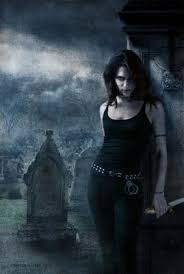

Kim Harrisons "The Hollows" series

In Kim Harrison's The Hollows series, the Hollows is a district in Cincinnati where humans, witches, vampires, and other supernatural beings coexist in a fragile balance. The series takes place in an alternate reality, where a virus known as the "Turn" has decimated the human population, allowing supernatural species to rise in prominence. The district becomes a hotbed of supernatural activity, with rival factions constantly vying for power. This creates a complex setting where danger, political intrigue, and magic intertwine.
What are the Hollows?
The Hollows is home to many magical creatures, such as witches, vampires, werewolves, and shape-shifters, each with their own traditions and power dynamics. The district is governed by both magical laws and human bureaucracy, though the lines between the two are often blurred. Characters in the series, such as Rachel Morgan, navigate this fractured world, balancing personal conflicts, moral dilemmas, and external threats. The Hollows thus represents a microcosm of the struggle for survival, identity, and belonging in a world where the supernatural is the new norm.
Great Storytelling!
While the Hollows is an area rife with conflict, it is also a place of strong community bonds. In a world where the supernatural has become increasingly integrated into everyday life, these bonds become crucial for survival and power. Rachel Morgan, along with her allies, often fights to protect the integrity of the Hollows from threats both internal and external, making it a key focal point in the series. The district serves as both a battleground and a home, with all of its residents trying to navigate the ever-changing tides of power.
The Hollows series:
- Dead Witch Walking
- The Good, the Bad, and the Undead
- Every Witch Way but Dead
- A Fistful of Charms
- For a Few Demons More
- The Outlaw Demon Wails
- White Witch, Black Curse
- Black Magic Sanction
- Pale Demon
- A Perfect Blood
- Ever After
- The Undead Pool
- The Witch with No Name
- American Demon
- Million Dollar Demon
- Trouble with the Cursed
- Demons of Good and Evil
- Demons Bluff
Find out more about the Hollows here!